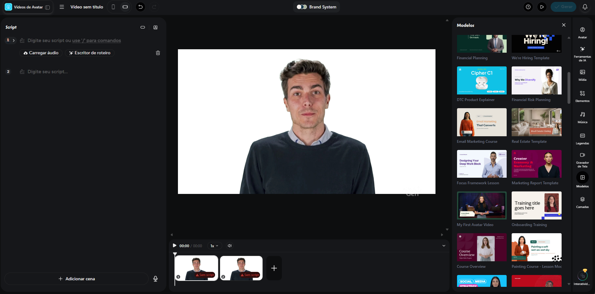
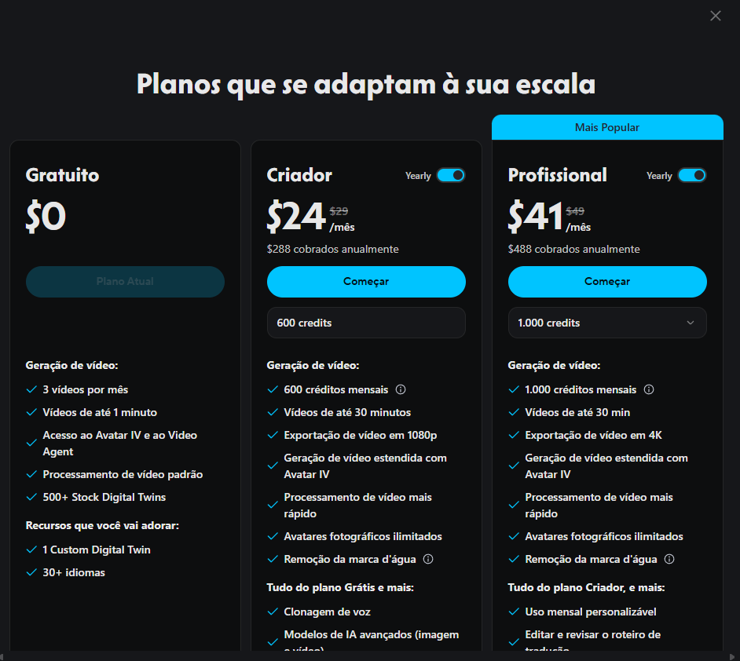
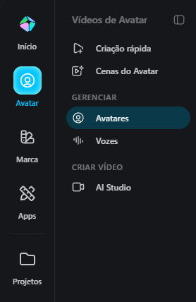
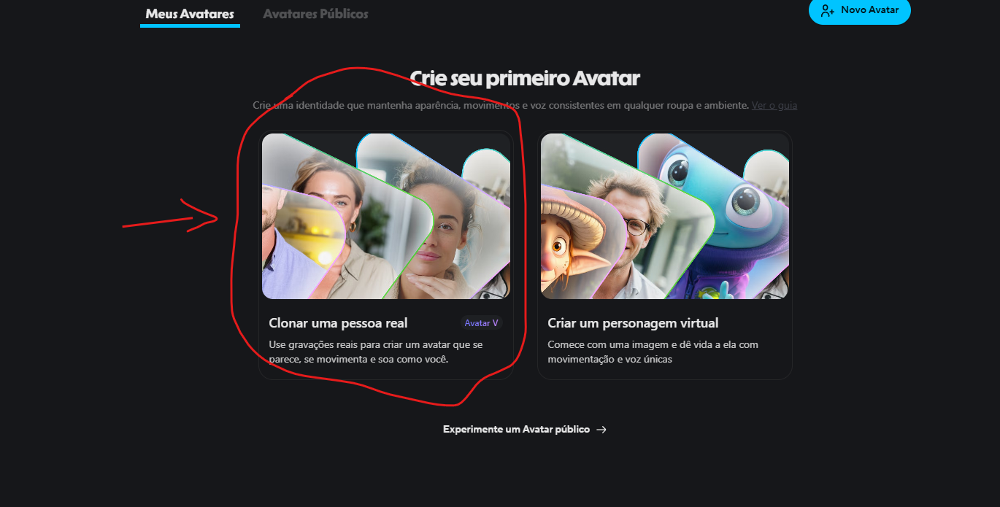
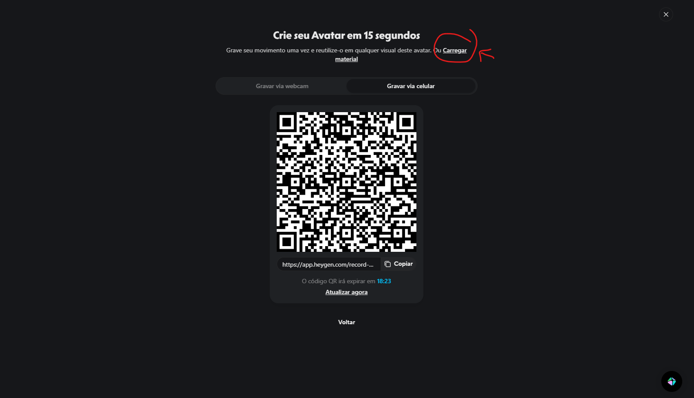
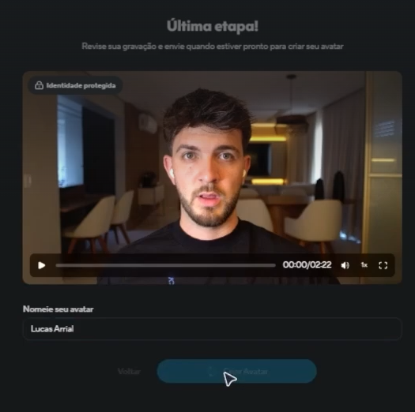
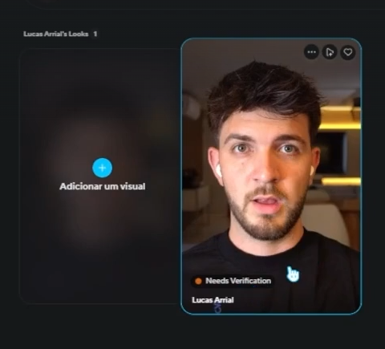
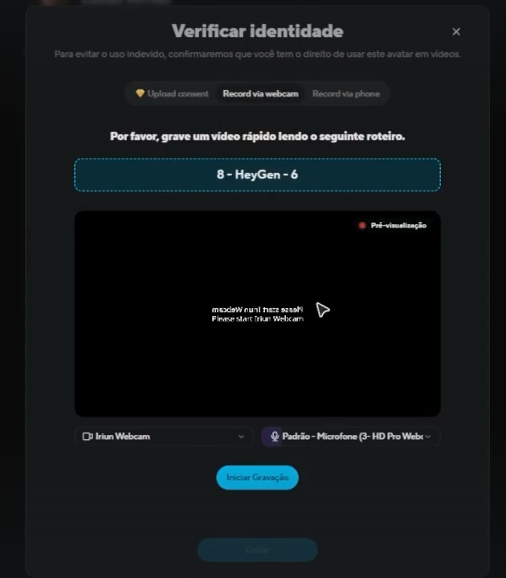
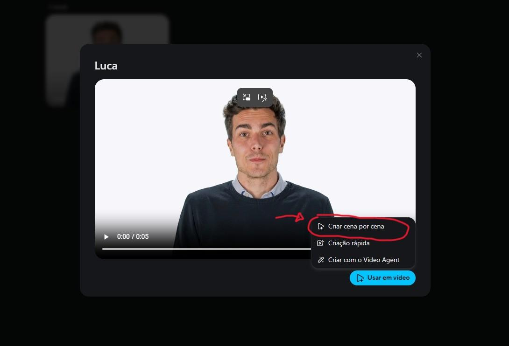
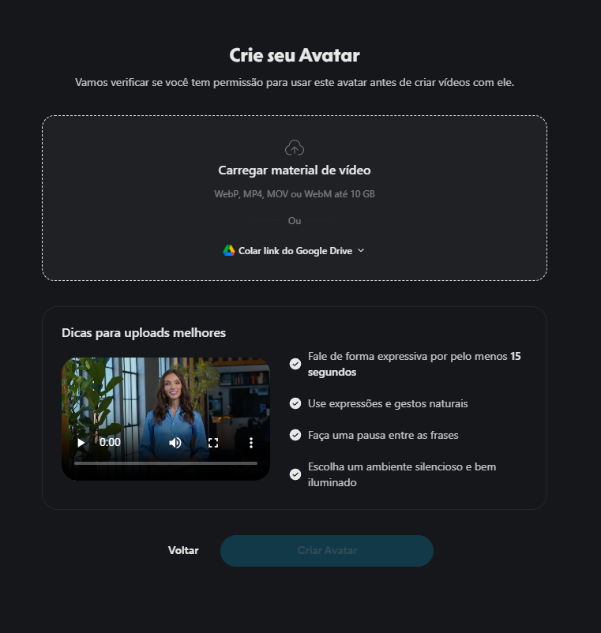

Aprenda a criar seu avatar digital com a plataforma HeyGen.
Do cadastro à criação de vídeos profissionais com inteligência artificial.

Crie clones digitais realistas usando vídeos de treinamento. O HeyGen utiliza IA para replicar aparência, movimentos e voz.
Produza vídeos com aparência profissional sem necessidade de estúdio. Ideal para redes sociais e marketing digital.
Embora o HeyGen ofereça clonagem de voz, plataformas como o ElevenLabs apresentam resultados mais naturais e realistas.
Siga o guia completo abaixo para criar seu avatar no HeyGen
Acesse a plataforma HeyGen e faça login utilizando sua conta Google ou outro método de autenticação disponível. Para isso, clique na opção "Entrar".
Acessar HeyGenApós o login, responda às perguntas iniciais sobre o objetivo de utilização da ferramenta. Em seguida, escolha o plano que melhor atende às necessidades.

Depois de concluir a configuração inicial, clique na opção "Avatar", localizada no canto superior esquerdo da tela.

Na seção de avatares, selecione a opção "Clonar uma pessoa real" para iniciar o processo de criação do seu clone digital.

Nesta etapa, será necessário realizar o upload dos vídeos gravados que serão utilizados para treinar o avatar. A qualidade desses vídeos influencia diretamente o resultado final da clonagem.
Recomenda-se utilizar gravações com boa iluminação, áudio claro e enquadramento adequado.

Após concluir o envio e a validação do vídeo, revise a gravação para garantir que a imagem e o áudio estejam adequados. Em seguida, insira um nome para identificar seu avatar no campo "Nomeie seu avatar".
Depois de definir o nome, clique no botão "Criar Avatar" para iniciar o processamento. A plataforma utilizará o vídeo enviado para treinar o modelo e gerar seu clone digital.

Após a criação do avatar, a plataforma solicitará uma etapa de verificação de identidade. Esse processo é obrigatório e garante que a pessoa que está criando o avatar seja a mesma pessoa representada no clone digital.
A verificação é realizada diretamente na plataforma por meio da webcam do computador. O HeyGen exibirá um código ou frase específica que deverá ser lida em voz alta durante a gravação.


Após a aprovação da verificação de identidade, o avatar estará pronto para ser utilizado na criação de vídeos. Nesta etapa, basta acessar a área de criação de projetos e elaborar o roteiro que será apresentado pelo avatar.
Escolha a forma como a voz será gerada:
A plataforma sincronizará automaticamente os movimentos labiais e as expressões faciais do avatar com o áudio fornecido.

Siga essas recomendações para obter os melhores resultados na criação do seu clone
Grave de forma natural, utilizando gestos e entonações compatíveis com a mensagem que deseja transmitir.
Faça pequenas pausas entre as frases para que a IA consiga interpretar melhor sua fala e padrões de comunicação.
Grave em ambientes bem iluminados, preferencialmente com iluminação uniforme sobre o rosto.
Posicione a câmera de forma estável e alinhada aos olhos para uma clonagem mais precisa.
Mantenha o olhar direcionado para a câmera, evitando desviar a atenção para outros pontos.
Fale de forma expressiva por pelo menos 15 segundos para dar material suficiente à IA.

Uma interface intuitiva para criar vídeos profissionais sem conhecimentos avançados
Lado esquerdo: digite o roteiro, gere narração por IA ou envie/grave um áudio para o avatar.
Centro: visualize o avatar na cena com a timeline de edição para organizar o conteúdo.
Lado direito: legendas, configurações de avatar, música, elementos visuais e animações.